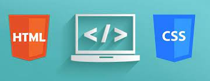

Que es CCS y como puedo usarlo
CSS, en español «Hojas de estilo en cascada», es un lenguaje de diseño gráfico para definir y crear la presentación de un documento estructurado escrito en un lenguaje de marcado.

Esta web es un ejemplo de uso de una hoja de estilo ccs en la que se pone en práctica los conocimientos adquirido en la asignatura programación web
Etiquetas HTML usadas
Anatomía de una regla CSS